Job desk reads the job boards for you, scores what it finds against what you want, drafts the CV and the letter, and tells you when a company has gone quiet. It never sends anything. You do.
Your notes stay on your Mac, as plain files. Nothing is posted, sent or submitted by the app.
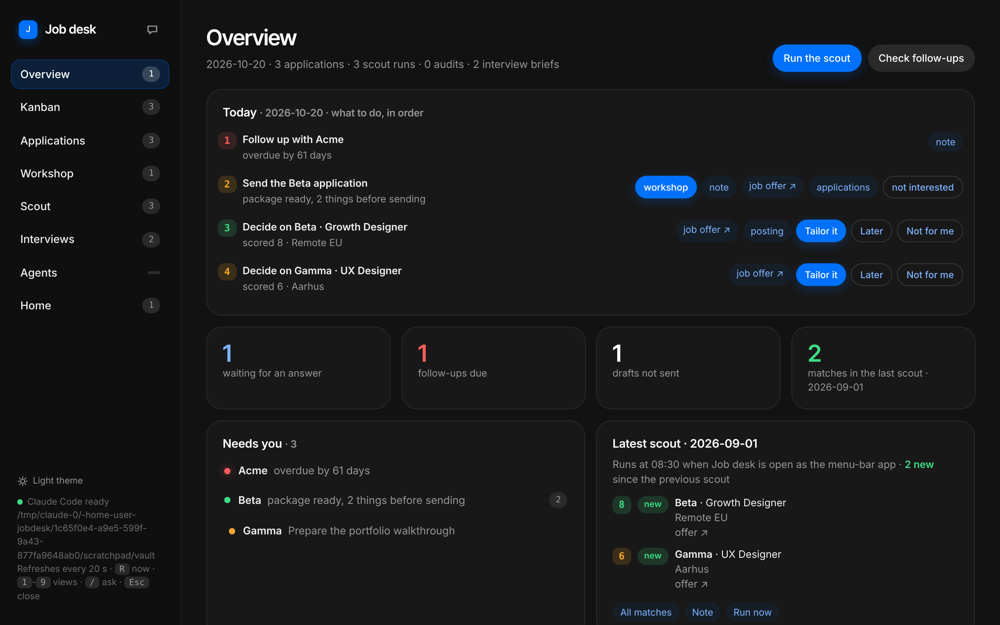
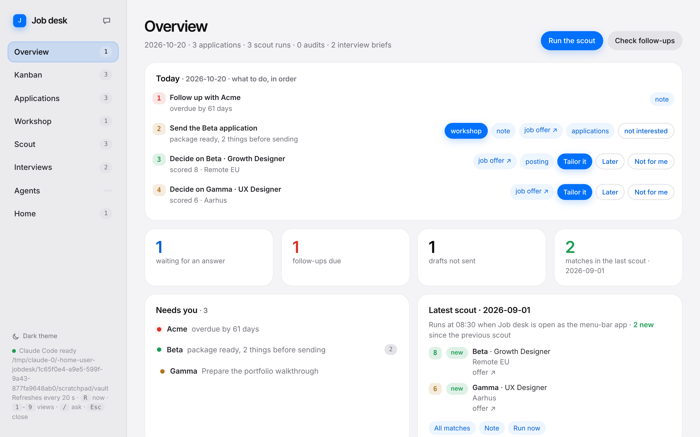
It searches against the roles, places and terms you set, scores each posting from 0 to 10 and says why it fits, what the risk is and the one thing to check. You decide with three buttons.
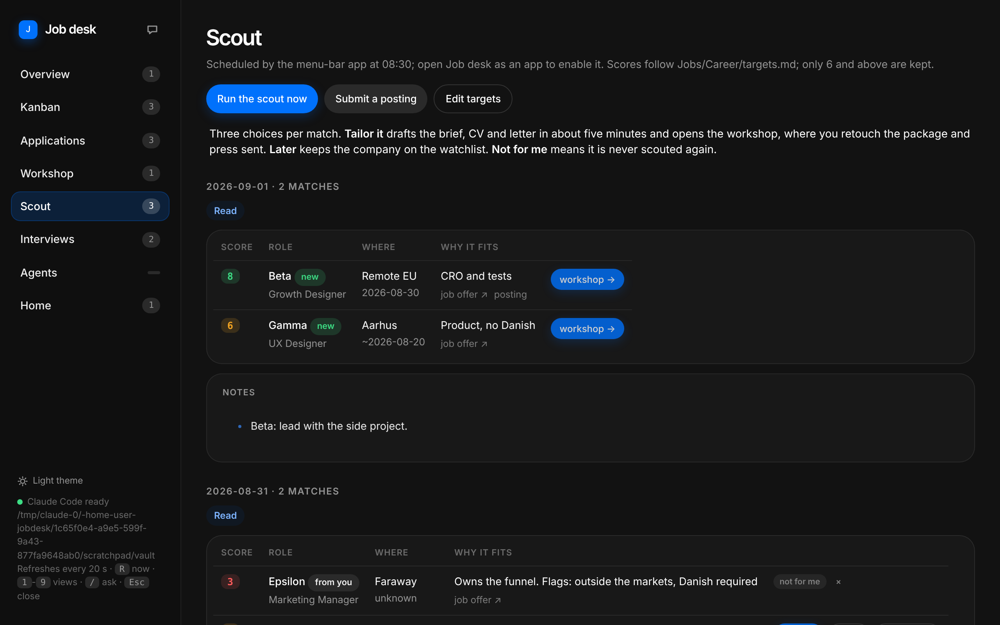
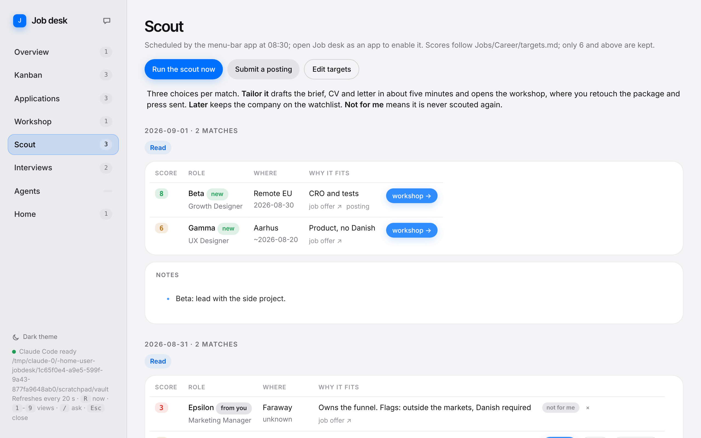
The package opens as text. Click a passage, say "shorter" or "less about management", and it is rewritten where it stands. Double-click to change a word yourself.
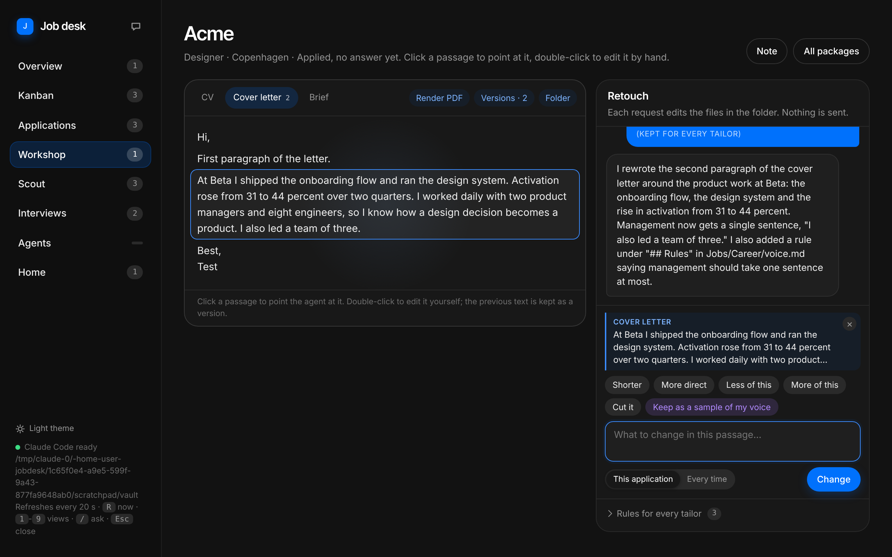
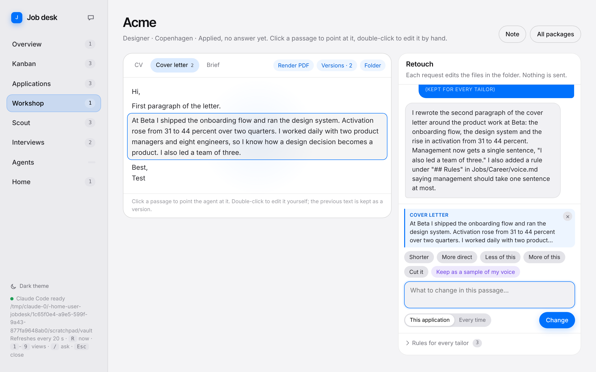
Press "sent" and a follow-up lands on the calendar fourteen days out. When a company stays silent, it comes back to the top of your morning with a message drafted in your voice. When a reply arrives, the card moves to In conversation.
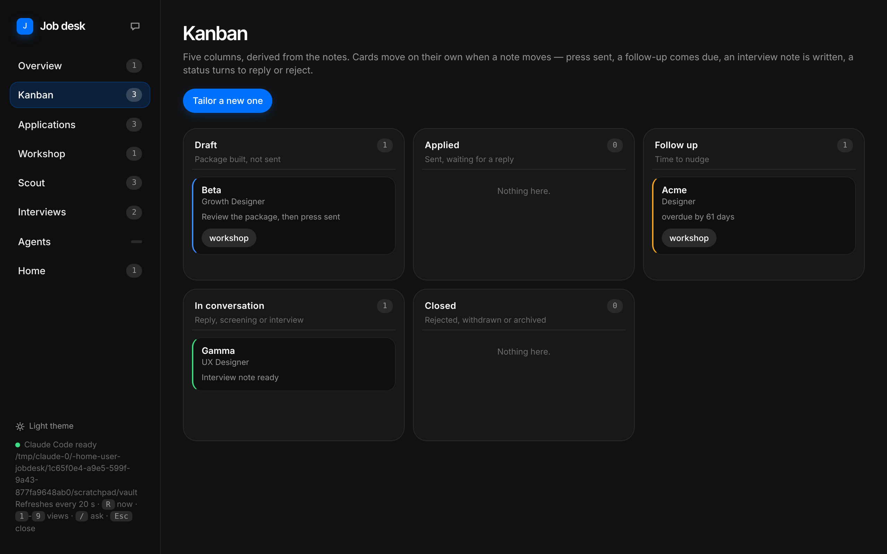
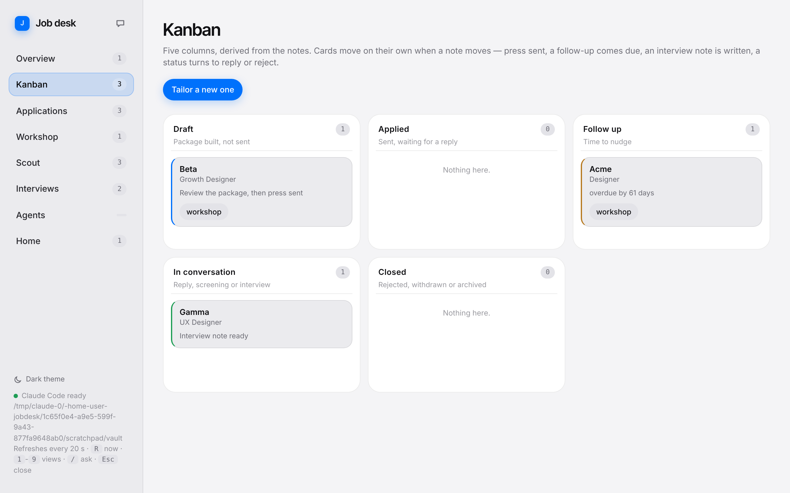
One click researches the company and writes a briefing and a "What I'd bring" proposal: three concrete suggestions tied to your own evidence, plus the thing you lack, said plainly, so it never surprises you in the room.
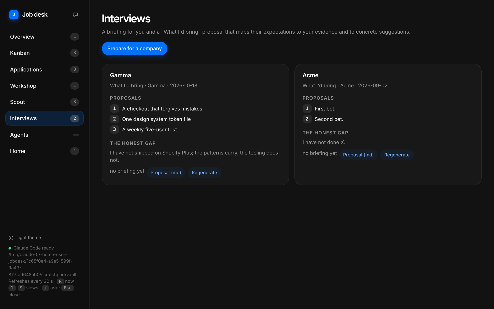
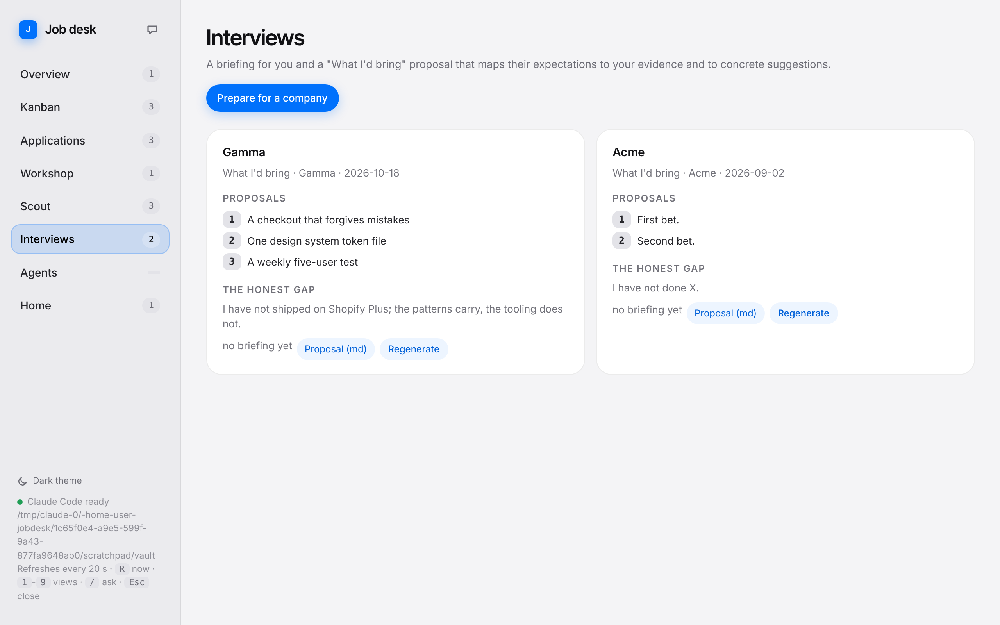
"Which match is closest to the Beta role?" "What did I promise Acme?" "What is due this week?" The answer comes from your own notes, read before it replies, and the conversation is saved beside them.
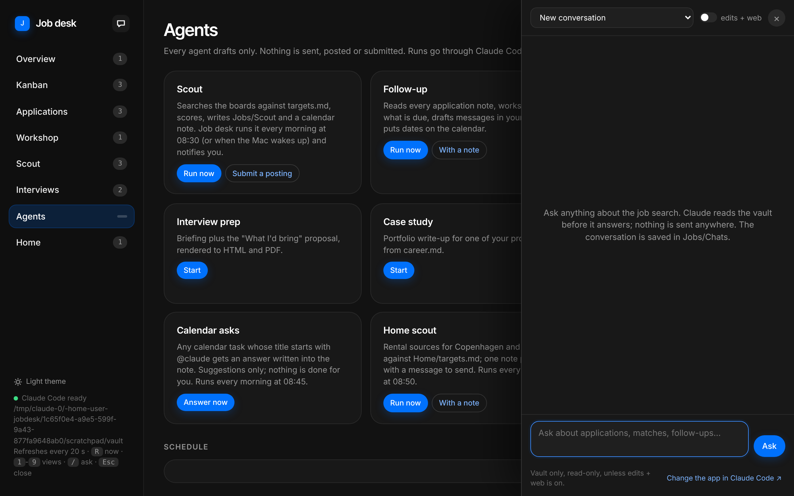
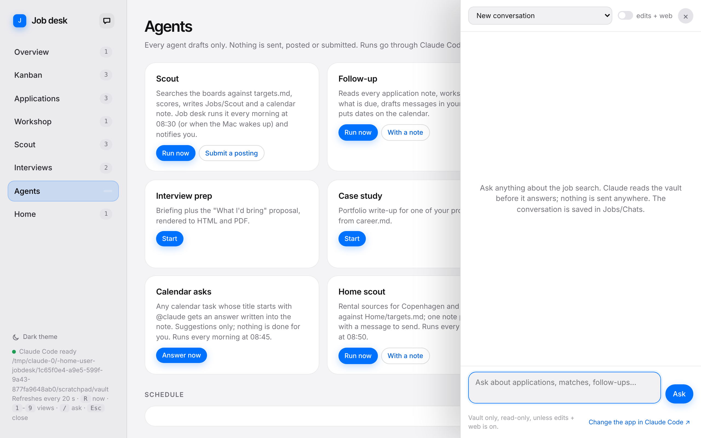
Scout, tailor, follow-up, interview prep, outreach, case study, the Monday review and the calendar desk. Each one drafts, nothing more. Run any of them now, or let the week's rhythm run them for you while the app sits in the menu bar.
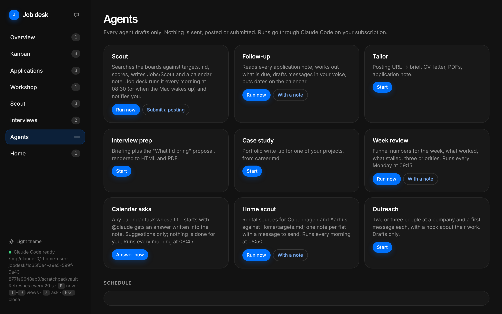
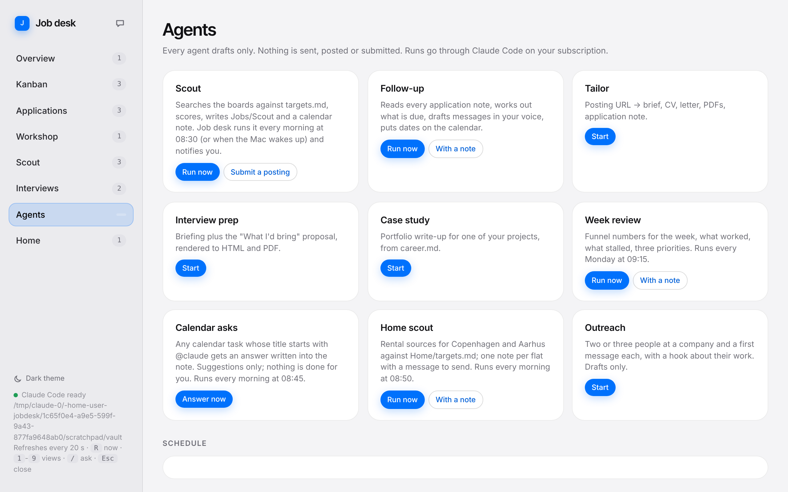
Every output is a draft. You read it, you send it, you mark it sent.
Plain Markdown on your Mac. Open them in Obsidian or any editor; keep them when you stop.
Runs through Claude Code on your Claude plan. No new account, no key to paste.
Silence is named as silence. A gap is written as a gap. No invented experience, ever.
You need a Mac and a Claude Pro or Max subscription. Open Terminal, paste this line and press Return.
curl -fsSL https://raw.githubusercontent.com/Upsstyle/jobdesk-releases/main/install.sh | bash